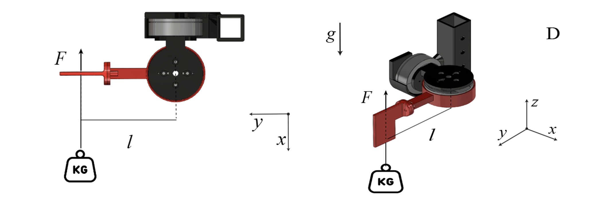
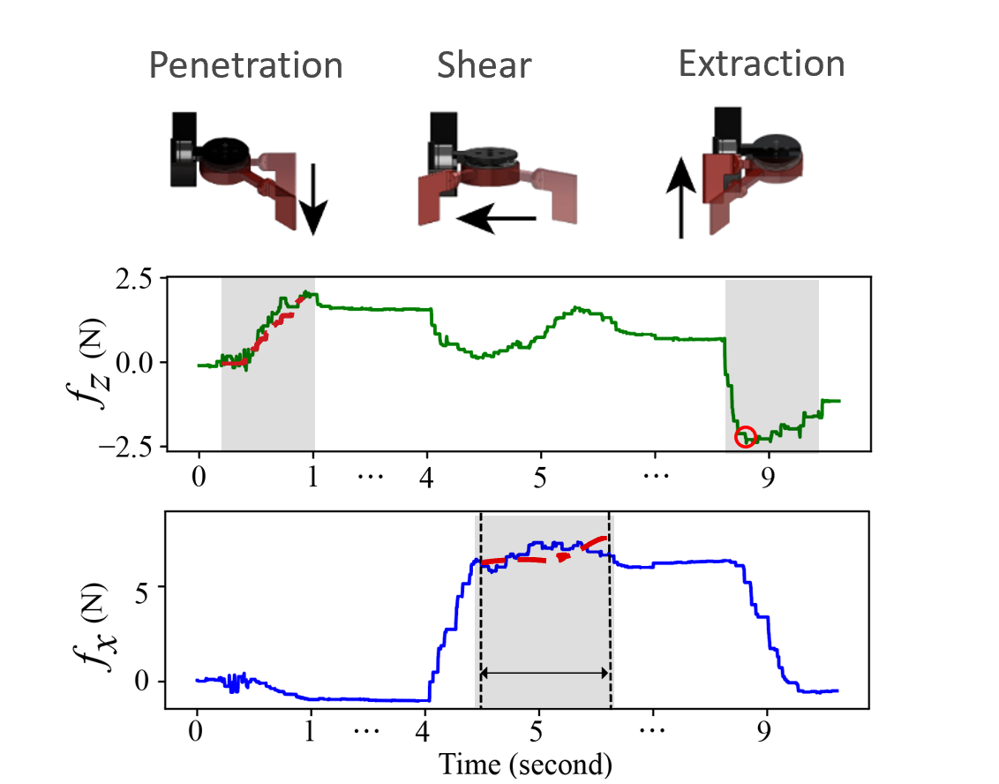
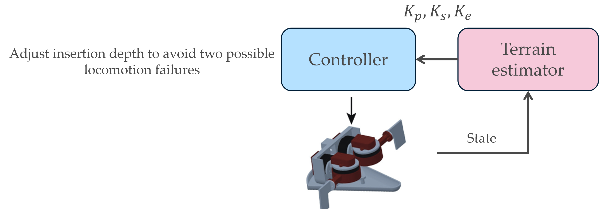
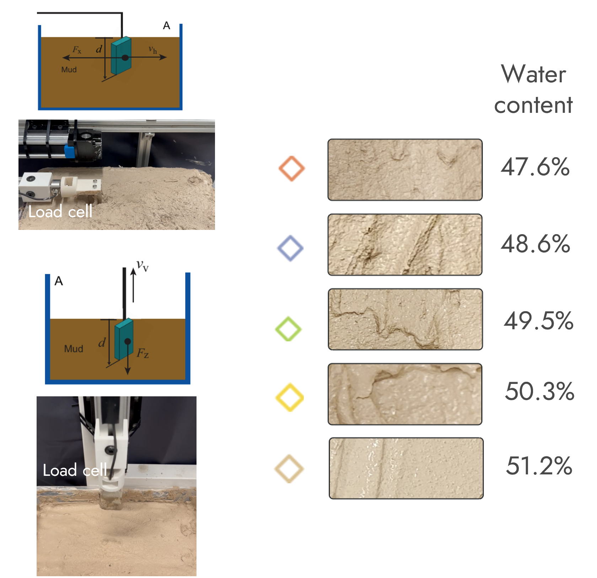
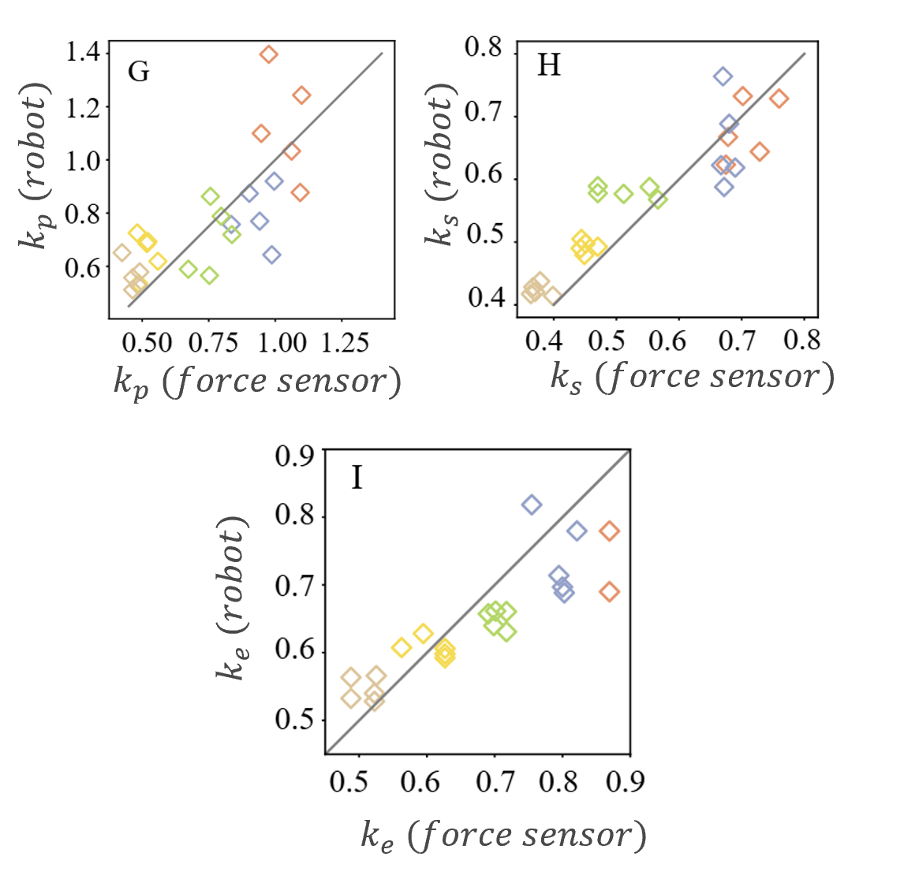
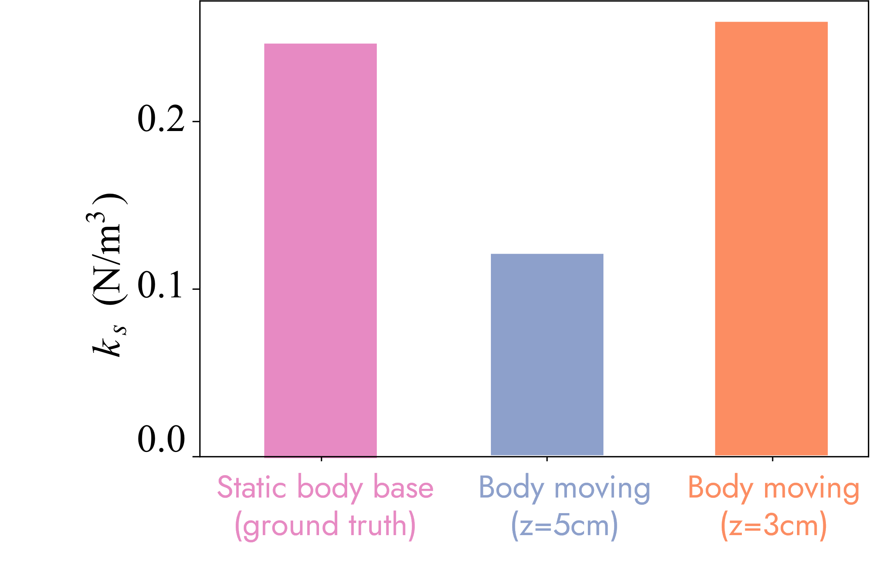
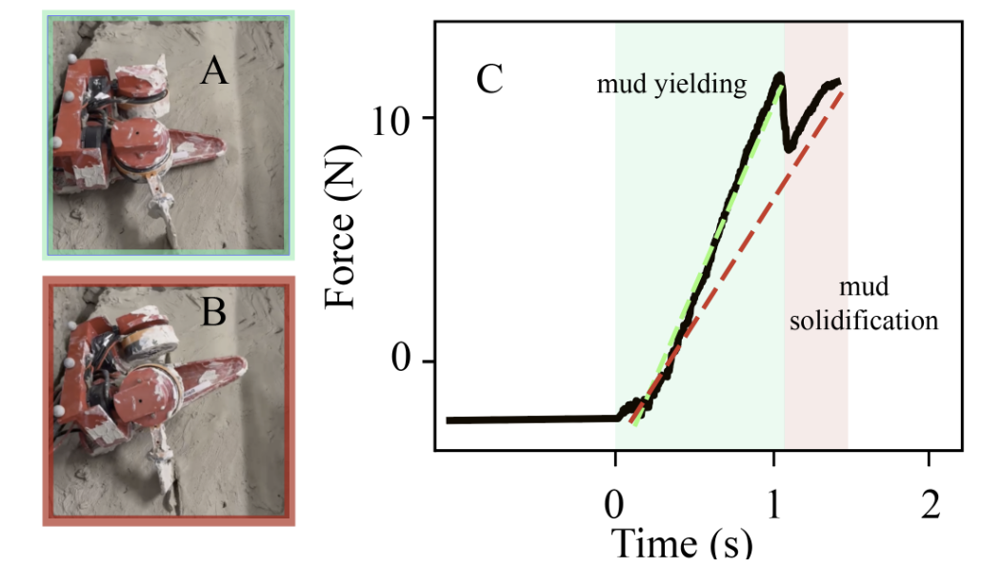

Introduction
 Motivation: Challenges of muddy terrain navigation for terrestrial robots
Motivation: Challenges of muddy terrain navigation for terrestrial robots
While visual information is often insufficient to identify the differences between muddy terrains, we draw inspiration from animals that use direct drive motors for locomotion. Our approach leverages proprioceptive sensing to characterize mud reaction forces through actuator current and position signals, enabling real-time adaptation to varying substrate properties.
Robot Design
We built a flipper-driven robot specifically designed for muddy terrain navigation. The robot features flippers that can interact with the substrate to gather proprioceptive data about mud properties.

Robot design showing the flipper mechanismRobot getting stuck in mud without adaptive control.
Motor transparency demonstration showing direct drive capabilities.
Flipper robot demonstration showing the robot in action.

Protocol demonstration showing how the flipper robot estimates forces through proprioceptive sensingMethodology
Based on Resistive Force Theory (RFT), we determine the mud property coefficient kp by minimizing the RMSE between the modeled force using Eqn. 1 and actual measurements:
where f̂z(kp) is computed based on RFT by integrating the penetration force from each infinitesimal flipper bottom segment at different depth z.
The force exerted on each infinitesimal segment at z is given by:
Since kp is an intrinsic mud property and does not depend on flipper motion, as the flipper moves through the mud and gathers data of fz, it can use these data to estimate kp.
Static Characterization
- Characterize mud reaction forces through actuator signals
- Use statically mounted robotic flipper
- Measure force to determine key coefficients
Online Estimation
- Extend method to locomoting robot
- Estimate mud properties in real-time
- Analyze robot movement with proprioceptive force
Adaptive Control
- Use estimated mud properties for locomotion strategy
- Adapt robot behavior to avoid failures
- Deploy in varying strength substrates
Our control system uses the sensed parameters to adapt the robot's locomotion strategy in real-time.

Control diagram based on sensed parametersValidation
The proprioceptively estimated coefficients match closely with measurements from a lab-grade load cell, validating the effectiveness of the proposed method.

Validation of proprioceptive sensing against lab-grade load cell measurements
Validation curve showing correlation between estimated and measured valuesDemo Video
Demonstration of adaptive locomotion on muddy substrates of varying strengths.
Additional demo (RSS v2) showcasing adaptive sensing and locomotion behavior.
Results
Experimental data reveal that mud reaction forces depend sensitively on robot motion, requiring joint analysis of robot movement with proprioceptive force to determine mud properties correctly.
Successful locomotion without failures using adaptive control.
Locomotion failure without adaptive control for comparison.
Key Findings
Our findings highlight the potential of proprioception-based terrain sensing to enhance robot mobility in complex, deformable natural environments, paving the way for more robust field exploration capabilities.
Success Rate
The proposed method allows the robot to use the estimated mud properties to adapt its locomotion strategy and successfully avoid locomotion failures in varying substrate conditions.
Additional Experiments Without Body Support
We tested the robot's sensing capability in scenarios with body pitch, roll, and yaw movements to evaluate system robustness under dynamic conditions.
Robot sensing capability test with 3cm flipper insertion depth and body movements.
Robot sensing capability test with 5cm flipper insertion depth and body movements.

Validation of robot sensing capability during body pitch/roll/yaw movements
Analysis of robot sensing performance under dynamic body movementsWhen the robot flipper initially inserts into the mud, the applied force is larger than the yield force, and the mud would yield under the flipper regardless whether the robot is constrained. As the flipper penetrates deeper, the mud yield force increases. Once the yield force grows sufficiently to counterbalance the applied force, the mud ceases to yield and behaves solid-like. For an unconstrained robot, the flippers would press against the solidified mud, lifting the body upwards, while the flipper-measured force stops increasing and remains around the applied force. Motion capture tracking data, or onboard IMU, can be used to estimate body lifting/pitching status and determine the solidification point, enabling our sensing strategies to be extended to unsupported scenarios.